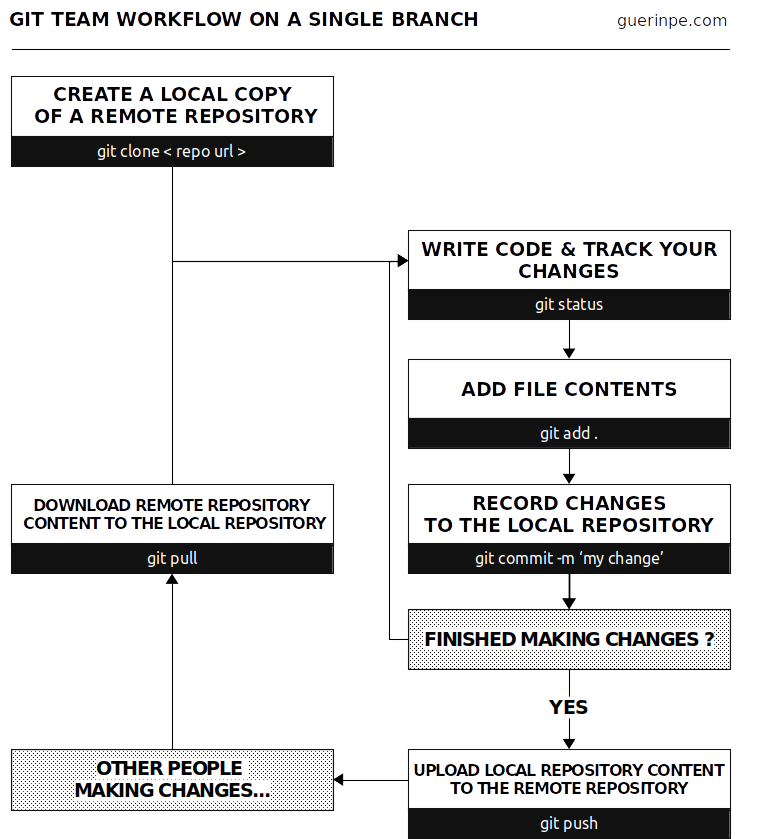

Team working with git
A quick reference for basic Git commands to help students learn Git.
November 26th, 2019. Pierre-Edouard GUERIN
I've been using git for years, alone or in collaboration with my team. Over time, I developed habits that I present in this article.
What's git?
When a programming project becomes more complex, you need to versionize it. Either a natural progression of the project over time or simply to add additional options. Managing these versions remains tedious as the project grows and even becomes risky when the project involves several collaborators.
git is the software that manages the versioning of files. More precisely, it forces users to version their files systematically. Finally, don't confuse git with gitlab, github, or bitbucket, which are forges. A forge is a web-based collaborative software platform for both developing and sharing computer applications. it encompasses much more functionality than version management.
I defined two types of usage for git (front and back). The front part corresponds to a very basic use of git, adapted to work in turn. The back part is a more advanced use of git wich requires branches. This involves checking out a new branch, working on it, and then merging the changes into the main master branch into a single commit.
